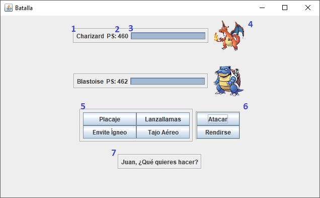
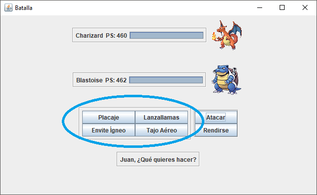

El combate consiste en una pelea por turnos en la que cada jugador selecciona si desea atacar o rendirse. Si desea atacar, lanzará un movimiento por cada turno.


En el combate encontramos diferentes elementos que son los siguientes:
1: Nombre del Pokémon
2: Puntos de salud
3: Barra de salud
4: Imagen del Pokémon
5: Movimientos del Pokémon
6: Menú para atacar o rendirse
7: Transcurso de la partida
El jugador deberá seleccionar un movimiento si desea atacar. Para seleccionar un movimiento lo hará pulsando sobre el botón del moviminento que quiera lanzar. El jugador deberá saber cuál es el mejor movimiento para atacar y cúal resulta más efectivo.
El combate finalizará cuando los Puntos de Salud(PS) de uno de los dos Pokémons esté a 0. Se nos mostrará un diálogo con el resultado de la partida al finalizar la misma.